Lab 00 - Prepare the lab environment
Lab introduction
Before we build anything, we need a place for our agents to live and some data for them to work with.
Think of it like a kitchen. Before you cook, you check the oven works and you put the ingredients on the counter. That's this lab. No agents yet - just the ingredients:
- a Copilot Studio environment you can build in,
- a SharePoint site with four Contoso IT policies,
- a SharePoint list where employees log IT requests.
Every lab after this one uses these ingredients, so take your time here.
Lab scenario
You work for Contoso, a company with offices in Casablanca, Paris, Madrid, Dubai and Lisbon. The IT Service Desk is drowning in repetitive questions ("How do I reset my password?", "How long does Visio take?") and in requests that someone has to read, classify and route by hand.
Your manager asks you to build agents that help. Step by step.
Job skills
- Task 1: Check your access and pick your Copilot Studio environment
- Task 2: Create the Contoso IT Hub SharePoint site
- Task 3: Upload the Contoso IT policies
- Task 4: Create the IT Requests list
- Task 5: Give the environment Copilot Credits (admin)
Task 1: Check your access and pick your Copilot Studio environment
Why start here? Because 90% of "the lab doesn't work" problems are a missing license or the wrong environment.
-
Sign in to https://m365.cloud.microsoft with your lab account.
-
In the left pane, look for New agent (it may sit under Agents & Skills). If you see it, Agent Builder is available to you. ✅
-
Open a new browser tab and go to https://copilotstudio.microsoft.com.
-
If you're asked to pick a country/region or start a trial, follow the prompts. The Home page greets you with three tiles: Agent, Workflow and App (preview). Notice the Uses Copilot Credits label - everything you build here consumes credits. ✅
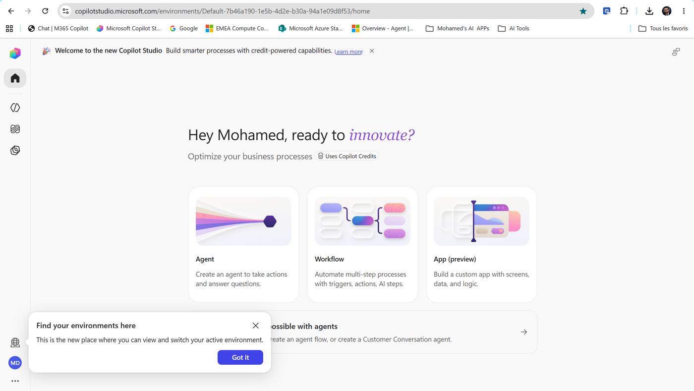
-
A tip appears: Find your environments here. The environment picker now lives in the left rail (the globe icon above your initials), not in the top-right corner. Select Got it, then select the globe icon.
-
The Switch environment panel shows your Current environment. Here it's the tenant's default environment.
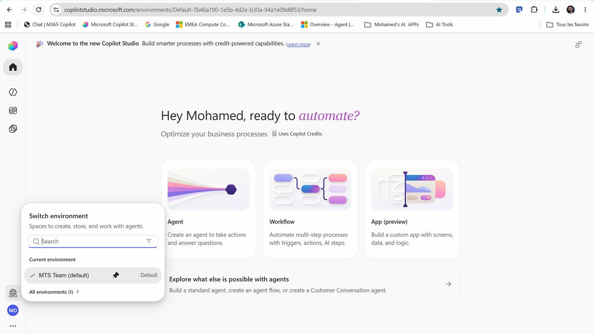
- Expand All environments to see every environment you can build in.
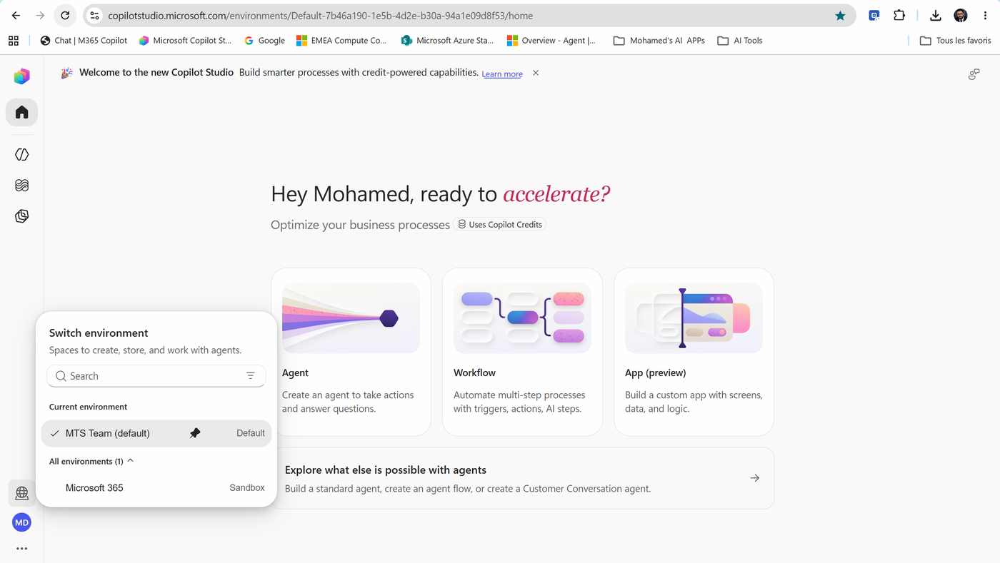
- Select the environment you'll use for Labs 03 to 09 and write its name down.
Note
Which environment should I pick? - Copying an agent from Agent Builder (Lab 03) and building in Copilot Studio both need an environment with a Dataverse database. - In a demo or lab tenant, the default environment is fine. - In a production tenant, prefer a dedicated environment (a Sandbox or Developer environment such as the one in the screenshot). The default environment is shared by everyone in the company - not where you want test agents and test connectors.
Not sure your environment has Dataverse? Ask your trainer, or check it in the Power Platform admin center > Environments.
Two engines, one studio. Look at the bottom of the Home page: Explore what else is possible with agents - Build a standard agent, create an agent flow, or create a Customer Conversation agent. Copilot Studio runs agents on a harness - the runtime between your design and the AI model. - The Microsoft Copilot harness (behind the Agent tile - the default) takes a goal, plans the steps, calls tools, and recovers when something fails. - The standard harness ("standard agent") follows the topics and paths you draw. - The Customer Conversation harness is built for customer-facing voice and chat.
We use the Agent tile in this course. You may also see the old name, GitHub Copilot harness, in older docs - it was renamed to Microsoft Copilot harness. Same runtime, and your data isn't sent to the GitHub Copilot service.
Task 2: Create the Contoso IT Hub SharePoint site
-
Open the SharePoint start page:
https://<your-tenant>.sharepoint.com(or the app launcher > SharePoint). -
In the left rail, select Build. The Start building page opens. Select the Site card.
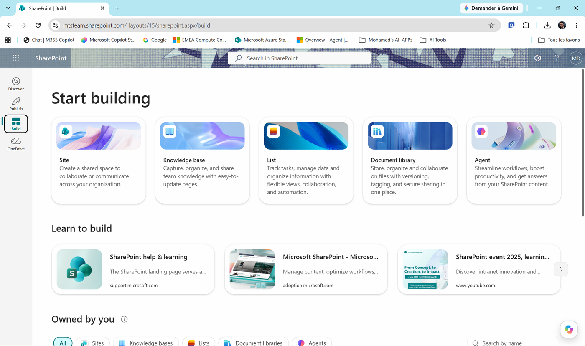
- In Select a site template, keep Team site selected and choose Standard team.
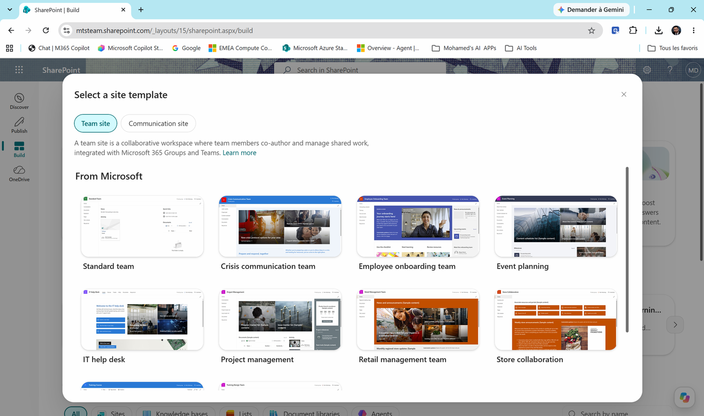
Note
Why a team site and not the "IT help desk" template? The IT help desk template ships with its own pages and lists. We want a clean site so you build - and understand - every piece yourself.
- Review the preview and select Use template.
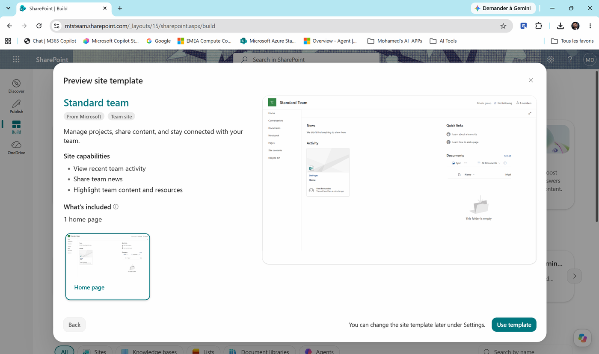
- Fill in Set up your site:
| Setting | Value |
|---|---|
| Site name | Contoso IT Hub |
| Site description | Policies and requests for the Contoso IT Service Desk |
| Group email address | ContosoITHub (filled in for you) |
| Site address | .../sites/ContosoITHub (filled in for you) |
| Privacy settings | Private - only members can access this site |
Wait for the green check marks (The site name is available, The group alias is available, The site address is available), then select Create site.
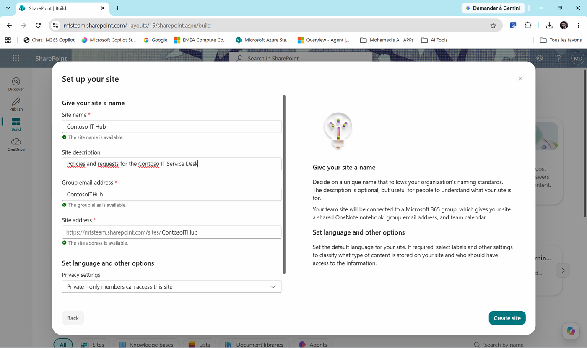
Note
A team site is connected to a Microsoft 365 group. That group - not the agent - decides who can read the policies. Remember this; it matters in Lab 02.
- Wait a few seconds while SharePoint creates the site.
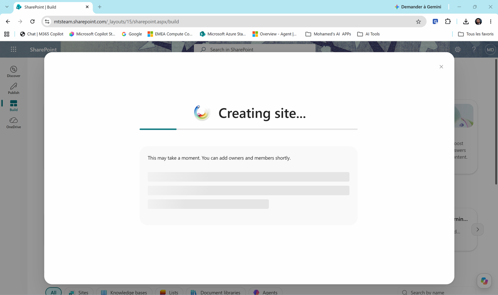
- When you see Your site is ready!, you can add owners and members now (your trainer or a test colleague), or skip it. Select Go to site.
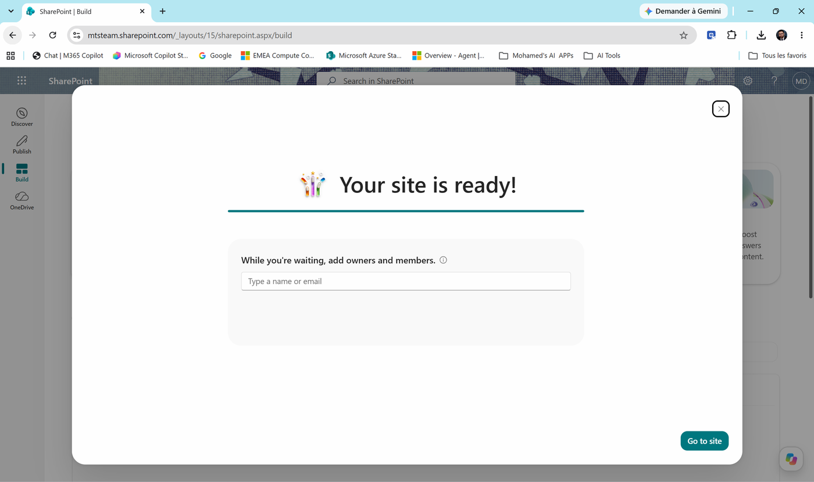
- The Contoso IT Hub home page opens with a Next steps panel. Close the panel.
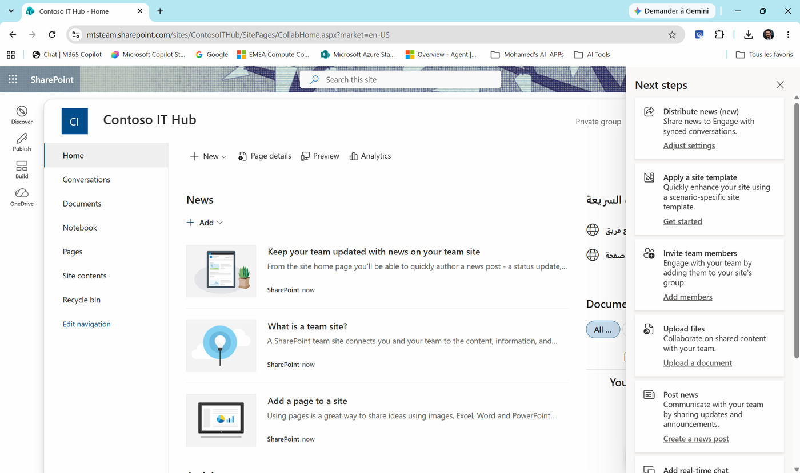
Task 3: Upload the Contoso IT policies
- Download the four policy files from this repository: open Allfiles/Labs/00, select each file, and use the Download raw file button (or download the whole repo with Code > Download ZIP).
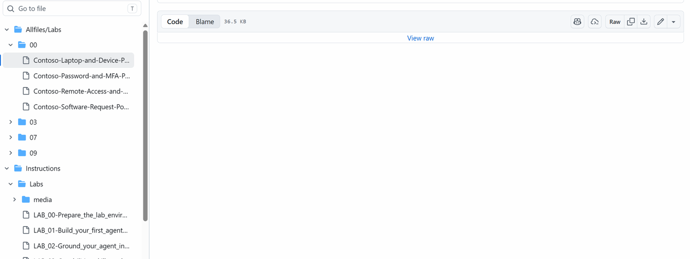
Contoso-Laptop-and-Device-Policy.docxContoso-Password-and-MFA-Policy.docxContoso-Remote-Access-and-VPN-Guide.docxContoso-Software-Request-Policy.docx
-
On the Contoso IT Hub site, select Documents in the left navigation.
-
Select Create or upload > Files upload, select the four files and open them. You should see Uploaded 4 items to Documents.
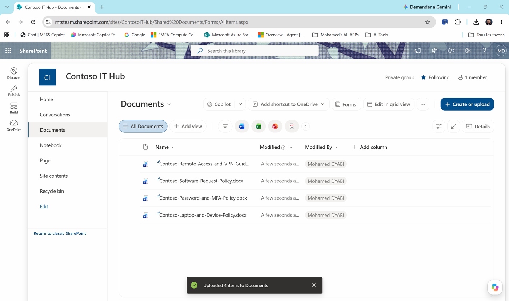
- Copy the site URL - everything up to and including the site name - and paste it into a notepad. You'll need it a lot.
https://<your-tenant>.sharepoint.com/sites/ContosoITHub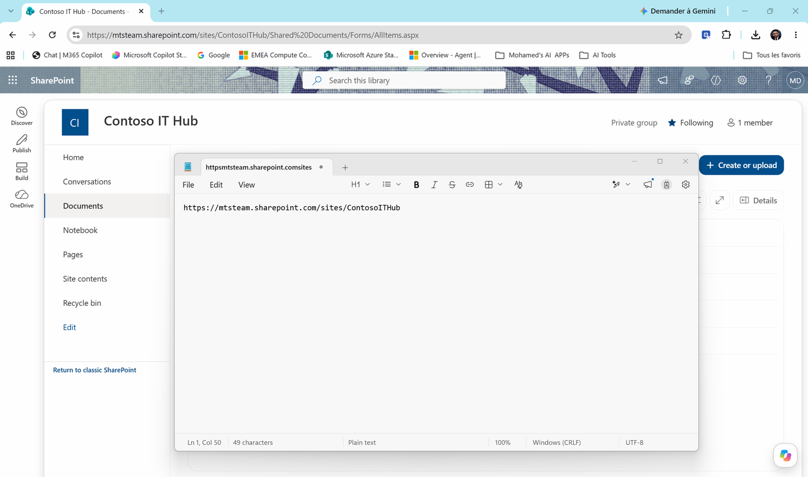
Note
Copy the address without /Shared Documents/Forms/AllItems.aspx. Agents and connectors want the site address. In later labs we point them at the Documents library of this site.
Why do we upload to SharePoint and not straight into the agent? Because SharePoint keeps the permissions. When an agent answers from SharePoint, a user only gets answers from files they're allowed to open. Upload a file into an agent, and everyone who uses the agent can read it. Remember this - it matters in Lab 09.
Task 4: Create the IT Requests list
This list is the "inbox" of our Service Desk. In Lab 05 an agent writes into it. In Lab 08 an autonomous agent watches it.
- Go back to the site Home page and select + New > List.
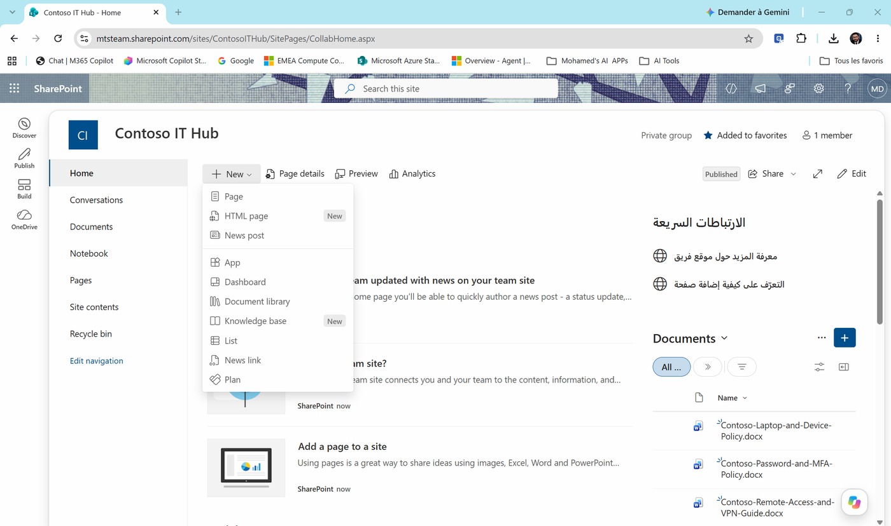
- In How would you like to start?, under Create from blank, select List.
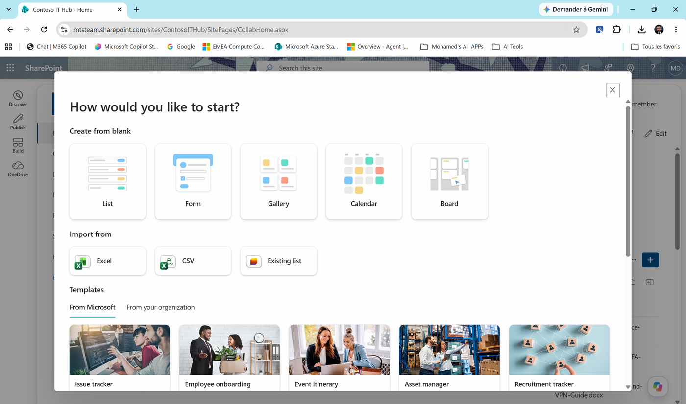
Note
Notice Import from Excel / CSV and the Issue tracker template. Useful in real life - but we build the columns ourselves so the agents' expectations match exactly.
- Name the list
IT Requests, keep Show list in site navigation checked, and select Create.
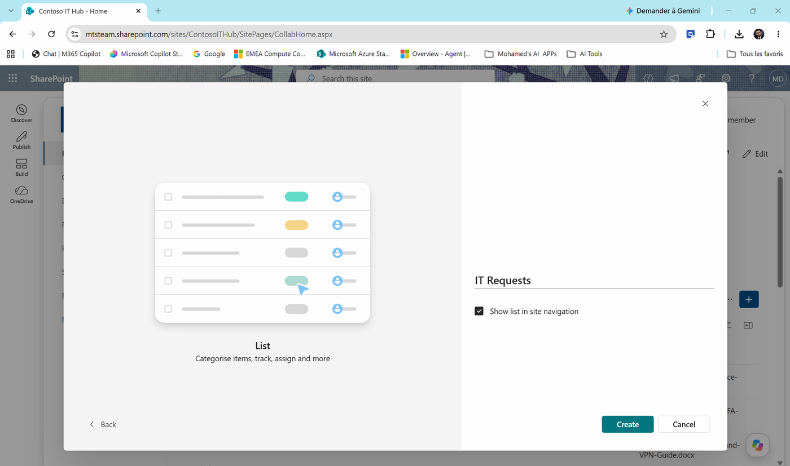
- Now add the columns. For each row of the table below, select + Add column, choose the type, select Next, and fill in the settings.
| Column name | Type | Choices / settings |
|---|---|---|
Description |
Multiple lines of text | |
Category |
Choice | Hardware, Software, Network, Account & Access, Security |
Priority |
Choice | Low, Normal, High, Critical - Default value: Normal |
Status |
Choice | New, Triaged, Waiting for approval, Approved, Rejected, Resolved - Default value: New |
AssignedTeam |
Choice | Endpoint, Apps, Network, Identity, SecOps |
RequestedBy |
Person | |
TriageNotes |
Multiple lines of text |
Important
⚠️ Type the choice values exactly as shown - same spelling, same capitals, same &. The agents in Labs 05-08 write these exact values. A typo here = a failed tool call later.
- How to fill a Choice column. The panel starts with three placeholders: Choice 1, Choice 2, Choice 3. Select each placeholder and type over it, then use + Add Choice for the extra values. Leave Can add values manually unchecked. The Description field is optional - listing the values there helps your colleagues.
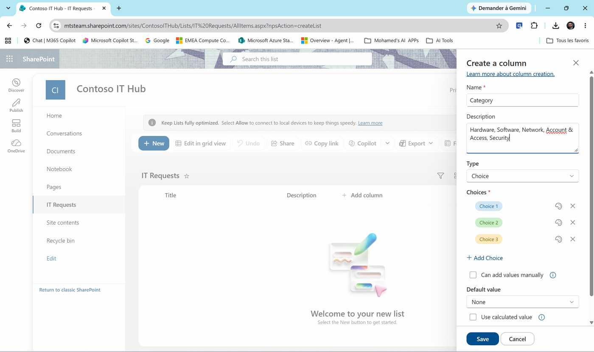
When you're done, the Status column should look like this. Set Default value to New (scroll down in the panel), then Save.
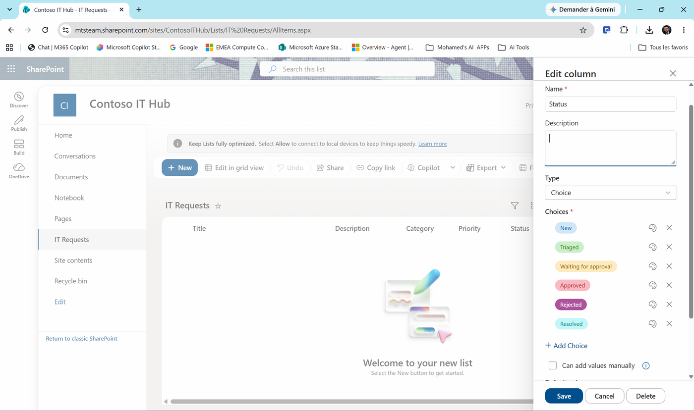
And the AssignedTeam column, with the five teams the agents route to:
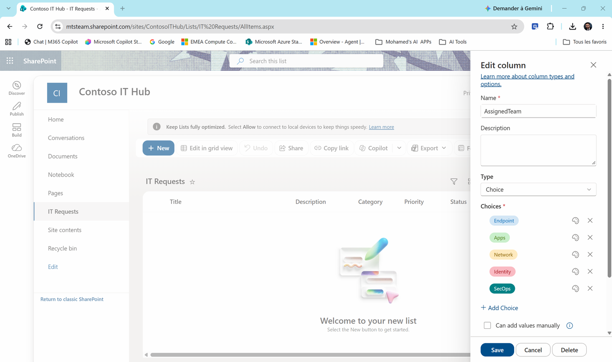
Note
Made a mistake? Select the column header > Column settings > Edit to fix the name, the choices or the default value.
- Check the result. Your list shows Title, Description, Category, Priority, Status, AssignedTeam, RequestedBy (scroll right for TriageNotes).
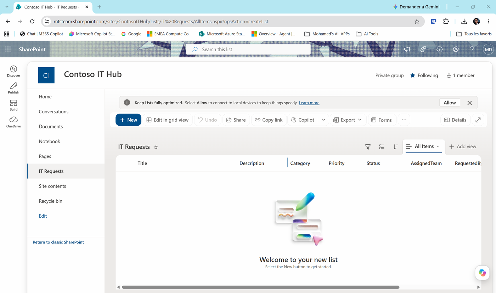
- Add one test item so the list isn't empty. Select + New and enter:
| Field | Value |
|---|---|
| Title | Docking station not detected |
| Description | My Dell dock stopped detecting my second screen after the update |
| Category | Hardware |
| Priority | Normal (already filled in - that's the default value you set) |
| Status | New (default) |
Select Save.
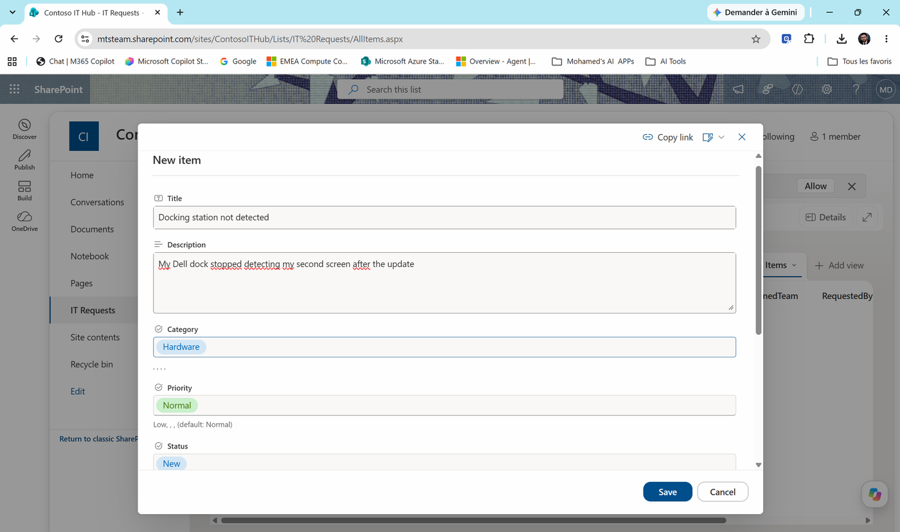
Note
Notice that Priority and Status were filled in for you. That's the default value at work. Later, when an agent creates an item and forgets a field, the default keeps the data clean.
The grey text under each field is the column description. Keep it readable (for example Hardware, Software, Network, Account & Access, Security) - it's the hint your colleagues see when they fill in the form.
Task 5: Give the environment Copilot Credits (admin)
Note
Who does this? A Power Platform or global admin - usually the trainer, once, before the course.
Here's a surprise many people hit. You have Microsoft 365 E5 and a Microsoft 365 Copilot license. You build an agent from the Agent tile, ask it a question in Preview... and get this:
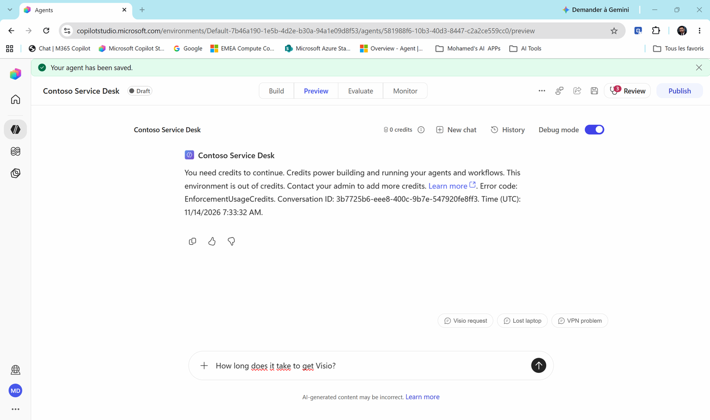
Why? Agents on the Microsoft Copilot harness are billed per use, in Copilot Credits - and billing starts as soon as you build and test, not when you publish. Credits belong to the environment, not to your user license. Your Copilot license doesn't add any.
The fastest way for a lab: pay-as-you-go, billed to an Azure subscription.
- Open the Power Platform admin center > Licensing > Copilot Studio. Under Recommendations, select + New billing plan.
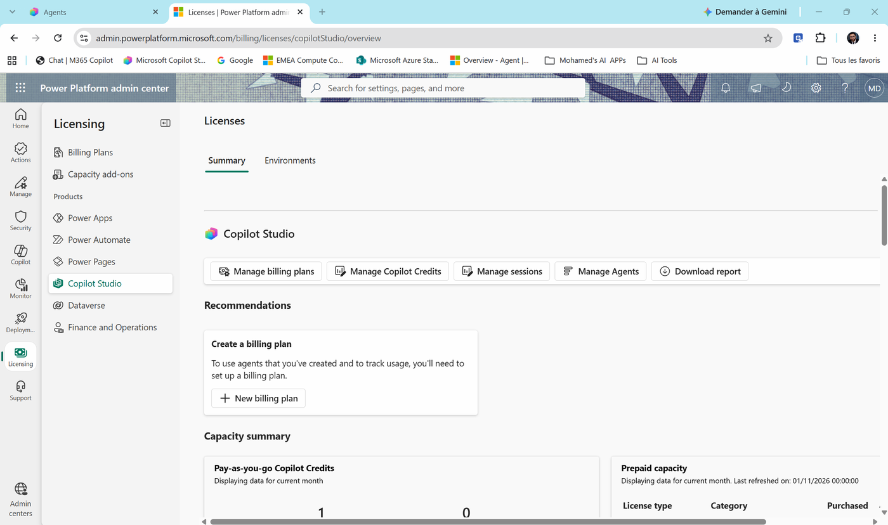
- Fill in the plan:
| Field | Value |
|---|---|
| Name | CopilotLabsPAYG |
| Azure subscription | The subscription that pays for the labs |
| Resource group | For example copilot-credits-rg |
| Meter | Copilot Studio only |
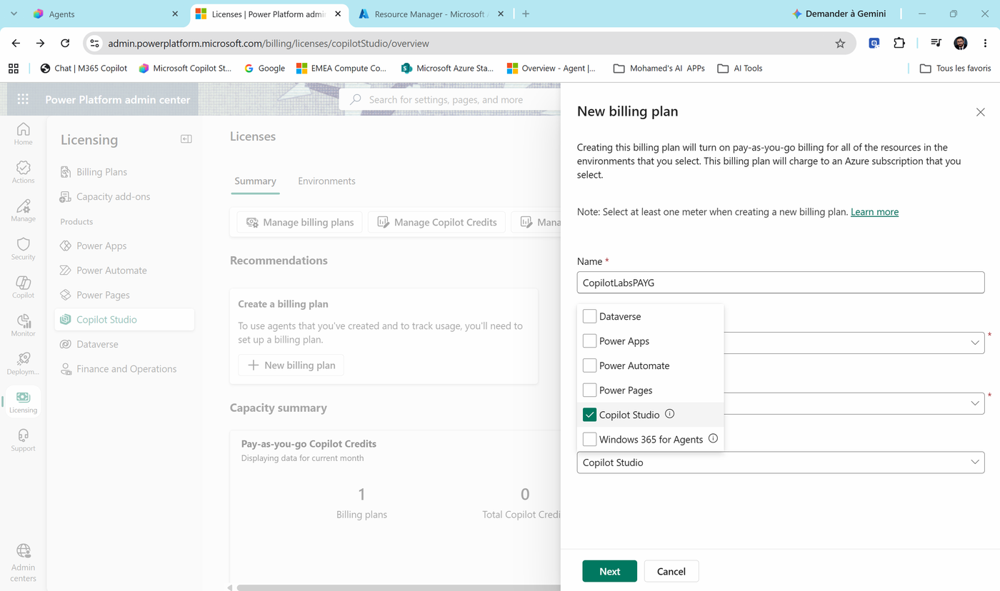
Note
Untick the other meters (Windows 365 for Agents, Dataverse...). Select only what this plan should pay for.
- Select Next. In Select environments, pick the Region where your environment lives. The list is filtered by region - pick the wrong one and it's empty:
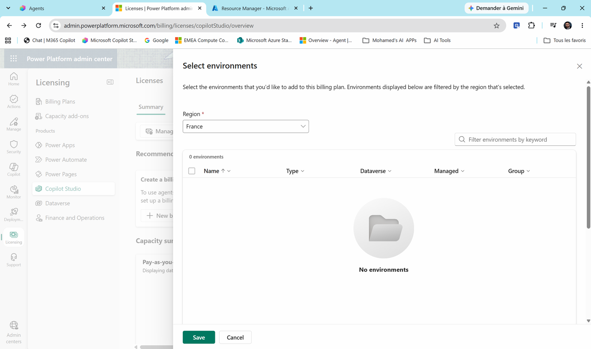
Not sure? Manage > Environments > your environment shows its region. Here it's Europe:
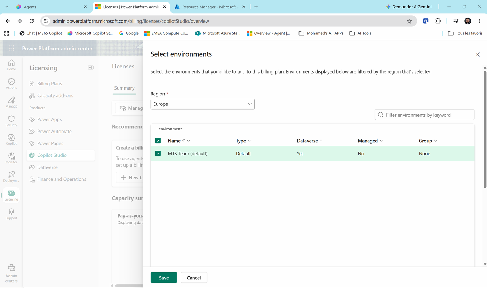
-
Tick your lab environment and select Save.
-
Go to Licensing > Billing Plans. Your plan shows Enabled, with Copilot Studio as the product.
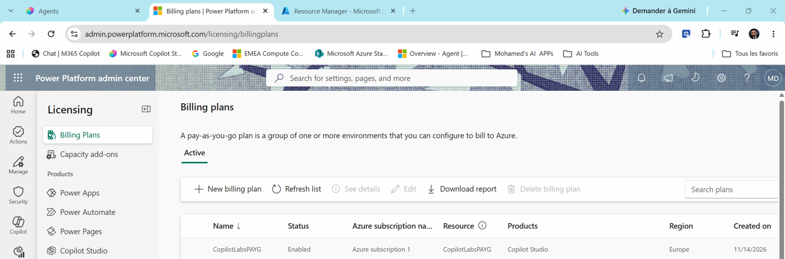
- Wait 5-10 minutes before testing an agent.
Cost
Protect your wallet. Pay-as-you-go has no hard cap. In the Azure portal, open Cost Management > Budgets and create a budget on the resource group with an e-mail alert. You can unlink the environment from the plan at any time to stop billing.
Other options: prepaid Copilot Credits capacity (allocate it to the environment under Licensing > Copilot Studio > Manage Copilot Credits) or a one-year Copilot Credits prepurchase plan bought in the Azure portal.
Check your work
- You can open New agent in Microsoft 365 Copilot.
- You can open Copilot Studio and you wrote down your environment name.
- The Contoso IT Hub site has four policies in its Documents library.
- You saved the site URL (
.../sites/ContosoITHub) in a notepad. - The IT Requests list exists with seven custom columns and one item.
- Your lab environment is linked to an enabled billing plan with the Copilot Studio meter.
Key takeaways
- Agents are only as good as the data you give them. Clean, short, well-titled documents give better answers.
- SharePoint keeps permissions. Uploaded files don't.
- Copilot Studio needs an environment with Dataverse. Find it with the globe icon in the left rail.
- New Copilot Studio agents (the Agent tile) run on the Microsoft Copilot harness by default.
- Exact column names and choice values are a contract between your data and your agents.